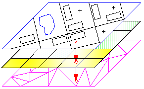
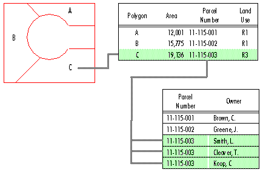
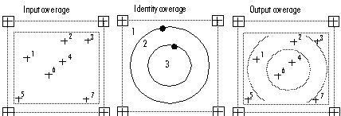
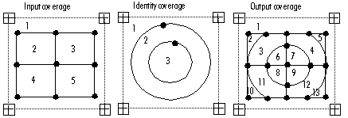
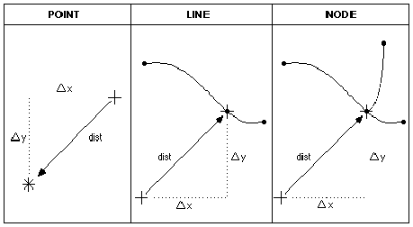
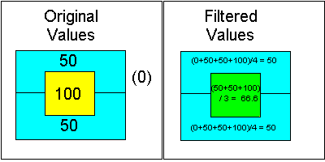
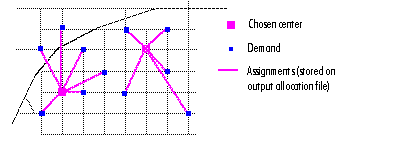

We use geographic information systems (GIS) for three types of work:
This document gives some examples of how we use GIS tools to perform these tasks and what sort of problems can be solved using GIS tools.
GIS analysis often requires large data sets. We use tools provided by our GIS software (ESRI's Arc/Info) and custom programs to create, update, store, and exchange our spatial data. Besides managing the digital map data used for this project, the GIS helps track the status of data stored in tabular databases on other computer systems.
1. Spatial Data Storage
|
 ESRI graphic |
Spatial data may be stored as points (towns and other central places), lines (roads, rivers), or polygons (counties, city systems). Each data topic is stored in a separate GIS file, called a "layer" or a "coverage." These files contain the spatial coordinates of their features; coordinates may be stored in latitude and longitude, or in some other Cartesian coordinate system. For our China data, the coordinates of each point are the distance (in kilometers) north and east of an origin point between Lanzhou and Chengdu, as measured on a map drawn in the Albers Conic Conformal projection. |
2. Link Between Spatial Data and Tabular Data
|
 ESRI graphic |
Each feature in a GIS layer has an identification number. This number is linked to an entry in a tabular database, which stores other information about that feature, such as its name, population, or navigability. The GIS features can also be linked to data stored in our SAS files or other kinds of databases. When changes are made to either the GIS file or the SAS file, the new information is exchanged between the two systems to ensure that subsequent analysis uses consistent information. |
3. Data Development Tools
Creating GIS data layers is the most time-consuming part of many GIS projects. We use several programs to assist in converting paper maps into digital data which can be stored and analyzed with the GIS. Typically, this process involves the use of a scanner, which creates a digital image file from a map traced on mylar or paper; the GIS program then calculates the coordinates of points and lines shown in the digital image file. Other programs assign identification numbers to each line, form polygons from contiguous lines, and add database codes to these features.
4. Simple Spatial Calculations and Topology
The GIS automatically calculates the length of lines and the area of polygons, and manages the topology of the geometric features (points, lines, and polygons) stored in each layer. The stored topology makes it possible to identify which lines form a particular polygon, and which polygons are found on either side of any line.
5. Managing Hierarchical Aggregations of Spatial Features
Features in some GIS layers can be created by aggregating features in other layers. For example, county polygons can be aggregated to form provinces, or city system polygons can be aggregated to form macroregional systems. Similarly, in coastal areas a single county may consist of several islands, each of which is shown as a separate polygon in the GIS layer, but for analytical purposes we would want to consider the county as a single unit. All of these hierarchical aggregations, called "region subclasses," may be stored in a single GIS layer. This is more efficient than storing each type of feature in separate files: it requires less computer storage space, and ensures that changes made to one level of the hierarchy are also effected at the other layers.
6. Data Documentation and Exchange
GIS data layers are useful only if they are well documented. For example, without documentation of the Albers coordinate system used for our China data, it would be impossible to compare our data with data from other sources, which may use a Lambert coordinate system. It is also important to document the accuracy and precision of the coordinates used; a layer's source maps, date, and known errors; and the codes used to differentiate features. We use several programs to compile this information in a standard format and to transfer this information, along with the spatial data itself, to other universities cooperating with us.
The objective of our work in creating and managing spatial data is to support analysis. Illustrated here are some of the questions which we answer using GIS for spatial analysis.
1. Point-in-Polygon overlay
|
In what Regional City System is this central place? |
 ESRI graphic |
2. Polygon-in-Polygon overlay
|
In which Regional City System is this county? What percentage of this county is in each Core-Periphery Zone? |
 ESRI graphic |
3. Nearest Point and Distance calculation
|
How far is this central place from the Regional City, the nearest road, or nearest City System boundary (straight-line distance)? What are the coordinates of the road intersection nearest to this central place? |
 ESRI graphic |
|
The Nearest Point technique is used with the Polygon-in-Polygon overlay to determine which central places are Janus-faced (oriented to two or more city systems). First, we use the Nearest Point technique to select central places which are very close to City System boundaries. Then we create a small polygon "buffer" around each of these central places, and overlay those polygons with the City System polygons to produce a list of the City Systems to which the central places are oriented. |
|
4. Adjacency and Spatial Filtering
|
How many adjacent counties must be crossed to reach the Regional City of each city system? How does the urbanization index of one county compare with that of its neighbors? What is the average index value in the neighborhood of several adjacent counties? |
 UCD graphic |
|
The example shows a filtering operation which weights each adjacent polygon equally. Weighting can also be made proportional to the length of shared borders. For descriptive purposes, the value of the original polygon can be excluded when calculating the filtered value. |
|
5. Network Allocation and Distance calculation
|
What is the distance from a central place to its regional city along the transportation network? What points on the transportation network are equidistant from two regional cities? What portion of the network can be allocated to a regional city, considering distance traveled, difficulty of transport over various classes of roads, and the relative attractiveness (urban or centrality potential) of each city? |
 ESRI graphic |
|
While the Nearest Point and Distance operations calculate distances in straight lines, the Network Allocation and Distance operations calculate distances only along the transportation network of roads, railroads, and navigable rivers. This calculation is more realistic but requires much more GIS data. |
6. Surface operations
Up to this point, we have used the vector model of spatial data, based on points, lines, and polygons. Another model, the raster model, depicts spatial features as cells (or groups of cells) in a grid. Raster GIS processing facilitates analysis of continuous spatial variables, such as elevation above sea level. All remote sensing data (from aircraft or satellites monitoring landscape characteristics, agricultural production, or climatic conditions) is initially processed using a raster model. Other variables may also be modeled as continuous surfaces in this model. Surface operations can answer such questions as:
What is the straight-line distance from
any point to the nearest regional city, or the nearest road?What city is most accessible from any point, considering both the configuration of the transport network and the increased difficulty of travelling across mountainous areas?
How can variables which are known only at certain points (such as towns) be interpolated across the landscape? (Various spatial interpolation operations are suitable for different types of variables.)
How might conditions at certain points interact across the landscape? (Spatial interaction operations such as gravity models consider the relative effects of "demand" and "supply" on a landscape surface.)
Ordinary database management programs produce output in the form of tabular reports and graphs. GIS software can also generate output in the form of maps.
1. Maps for data management
We frequently generate "checkplot" maps showing new data layers, for comparison with the source paper maps and with other layers in our GIS database. Other maps showing the names and identification numbers of counties, for example, are routinely used in managing tabular data.
2. Maps to inform analysis
For example, in the process of assigning counties to Core-Periphery Zones, we generate maps to show the percentage of each county in each zone and compare that percentage with the county's assigned value. Maps showing central places in relation to the transport network are critical to the manual process of central place analysis.
3. Maps to present results of analysis
In presentations, "a picture is worth a thousand words." Recent maps for publication and presentation have depicted our analysis of the city systems and Core-Periphery Zones in northern France and China's Lower Yangzi macroregion. We use specialized graphic design software in addition to our GIS to customize our presentation maps.
GIS Tools for Macroregional Analysis
Mark Henderson, UC Davis Department of Anthropology, March 1998